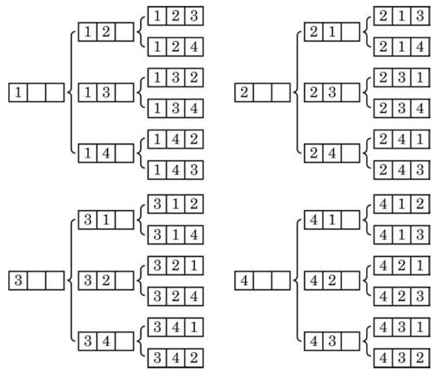
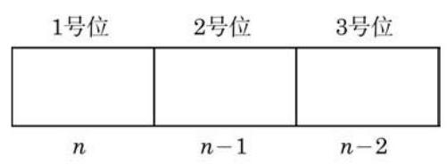
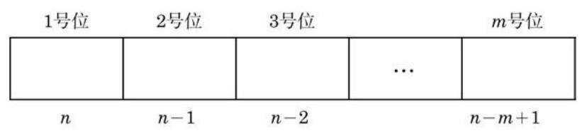

例题 1
例 1 写出从 四个元素中任取两个不同元素的所有排列.
学生阅读版 / 沪教版高中数学
选择性必修第二册
第6章计数原理 · 保留教材主线与原题
教材与正式教参整合
考虑下面两个问题:
问题 1: 从甲、乙、丙 3 名学生中任选 2 名, 一名担任正班长, 另一名担任副班长. 有多少种不同的选法?
这个问题就是从甲、乙、丙 3 名学生中，每次任选 2 名，按照正班长在左、副班长在右的顺序排列, 求一共有多少种不同的排法.
首先确定正班长, 在 3 名学生中, 任选一名作为正班长, 有 3 种方法; 然后确定副班长, 当正班长选定后, 副班长就只能在其余的两人中选取, 有 2 种方法. 于是, 根据乘法原理, 从甲、 乙、丙 3 名学生中，每次任选 2 名，按照正班长在左、副班长在右的顺序排列的不同方法共有
种, 即有 6 种不同的选法.
问题 1 是从 3 个不同的元素 中任取 2 个,并按序排列, 求一共有多少种不同的排列方法. 所有的排列是
这些排列的总数为 .
问题 2: 已知抛物线的方程为 ,其中 、 ,且 两两不同. 求这样的抛物线的个数.
这个问题就是从 4 个不同的数字中，每次任取 3 个不同的数字,按照 的系数、 的系数和常数项这样的顺序排列起来, 求一共有多少种不同的排法.
第一步,先确定 的系数,从 这 4 个数字中任取 1 个, 有 4 种方法;
第二步,确定 的系数,当 的系数确定以后, 的系数只能从余下的 3 个数字中任取 1 个,有 3 种方法;
第三步,确定常数项,当 的系数和 的系数都确定以后, 常数项只能从余下的 2 个数字中任取 1 个, 有 2 种方法.
根据乘法原理, 从 4 个不同的数字中, 每次任取 3 个不同的数字,分别作为 的系数、 的系数和常数项的方法共有
种. 具体方法如图 6-2-1 所示( ☐☐ ☐ 中的数字从左至右依次为 的系数、 的系数和常数项).

图 6-2-1
以上两个问题的共同点在于, 都是从若干个不同元素中选取部分 (或全部) 元素, 并按序排列, 求一共有多少种不同的排法.
从排列的定义可以看出, 如果两个排列是相同的, 不仅组成这两个排列的元素完全相同, 而且排列的顺序也是完全相同的. 如果所取的元素不完全相同, 那么这两个排列是两个不同的排列 (如问题 1 中的 与 ); 如果所取的元素完全相同,但排列顺序不同, 那么这两个排列也是不同的排列 (如问题 2 中的 3[2] 与 3[12]).
例 1 写出从 四个元素中任取两个不同元素的所有排列.
例 2 将 6 本不同的书排成一排, 有多少种不同的排法?
例 3 10 名学生排成两排照相, 每排 5 人，共有多少种不同的排列方式?
怎样计算从 个不同元素中取出 个元素的排列的个数? 一般地，我们有下面的定义:
P 是英文 permutation 的第一个字母. 在有些资料中也用符号 表示排列数.
例如,问题 1 中的选法数可以表示为 ; 问题 2 中的抛物线个数可以表示为 . 下面研究排列数的计算公式.
求排列数 ,可以这样考虑: 假定有排好顺序的 3 个位子 (图 6-2-4),从 个互不相同的元素 中任取 3 个填空, 一个位子填一个元素, 每一种填法就得到一个排列; 反过来, 任何一个排列都可以由这样的一种填法得到. 因此, 所有不同填法的总数就是排列数 .

图 6-2-4
为了计算 ,可以分成以下三个步骤:
第一步,确定 1 号位上的元素,这可以从 个互不相同的元素中任取一个填空,有 种方法;
第二步,确定 2 号位上的元素,这可以从剩下的 个互不相同的元素中任取一个填空,有 种方法;
第三步,确定 3 号位上的元素,这可以从剩下的 个互不相同的元素中任取一个填空,有 种方法.
根据乘法原理, 可以得到排列数为
同样,求 ,可以这样考虑: 假定有排好顺序的 个位子 (图 6-2-5),从 个互不相同的元素 中任取 个填空, 一个位子填一个元素, 每一种填法就得到一个排列; 反过来, 任何一个排列都可以由这样的一种填法得到. 因此, 所有不同填法的总数就是排列数 .

图 6-2-5
为了计算 ,可以分成以下 个步骤:
第一步,确定 1 号位上的元素,这可以从 个互不相同的元素中任取一个填空,有 种方法;
第二步,确定 2 号位上的元素,这可以从剩下的 个互不相同的元素中任取一个填空,有 种方法;
第三步，确定 3 号位上的元素，这可以从剩下的 个互不相同的元素中任取一个填空,有 种方法;
以此类推,当前面的 个位子都被填好后, 号位可以从余下的 个互不相同的元素中任取一个填空,有 种方法.
根据乘法原理, 可以得到排列数为
例 4 用 0、1、2、3、4、5 这 6 个数字，可以组成多少个没有重复数字的三位数?
例 5 (1)7 个人站成一排. 若甲和乙不能相邻排列，有多少种不同的排法?
(2)要将 8 本各不相同的教科书排成一排放在书架上，其中数学书 3 本、外语书 2 本、物理书 3 本. 如果 3 本数学书要排在一起, 2 本外语书也要排在一起, 那么有多少种不同的排法?
例 6 将 六个不同元素排成一列,其中 不在首位, 不在末位. 问: 有多少种不同的排法?
(1)共有多少种不同的排法？
(2)若甲必须站在排头，有多少种不同的排法？
(3)若甲不能站排头，也不能站排尾，有多少种不同的排法？
2.(1)配制某种染色剂，需要加入 3 种有机染料、 2 种无机染料和 2 种添加剂，其中有机染料的添加顺序不可以相邻. 为研究所有不同的添加顺序对染色效果的影响, 总共要试验多少次?
(2)某展览馆计划展出 10 幅不同的画, 其中水彩画 1 幅、油画 4 幅、国画 5 幅. 现排成一排陈列, 要求同一品种的画必须连在一起, 并且水彩画不放在两端. 问: 有多少种不同的陈列方式?
为方便起见,把乘积 记作 ,读作 的阶乘,那么 个不同元素的全排列数可以写成
即排列数公式还可写成
为了使这个公式在 时也成立,我们规定
所以 在 时也成立,即 .
例 7 设 是一个不小于 17 的正整数,用排列数表示
例 8 已知 是正整数,且 . 求证:
(1) ;
(2) .
例 9 解关于正整数 的方程: .
(1)若参加面试的人全是女生，则有多少种不同的面试方法?
(2)若参加面试的人中，恰好有 1 名女生，则有多少种不同的面试方法？
A. ; B. ;
C. ; D. .